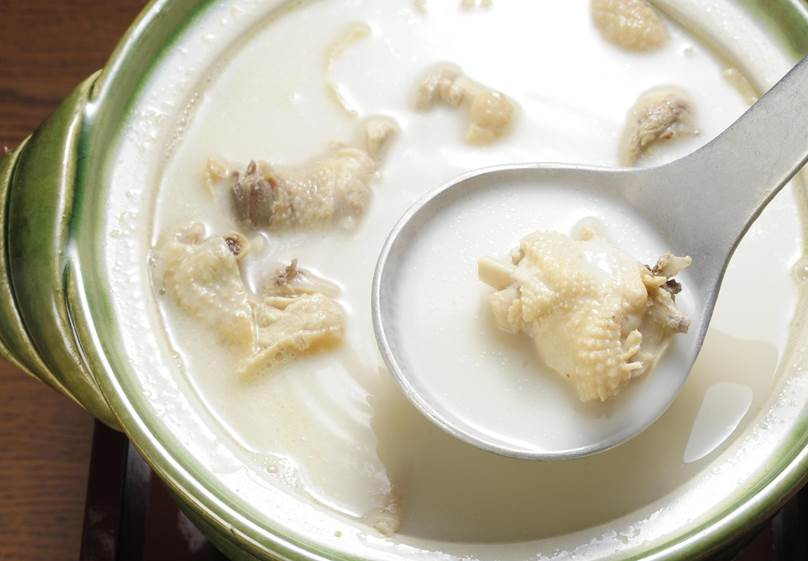
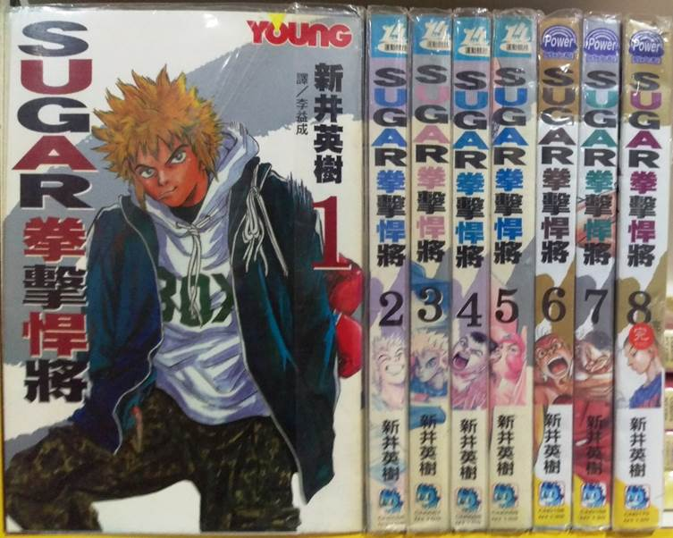
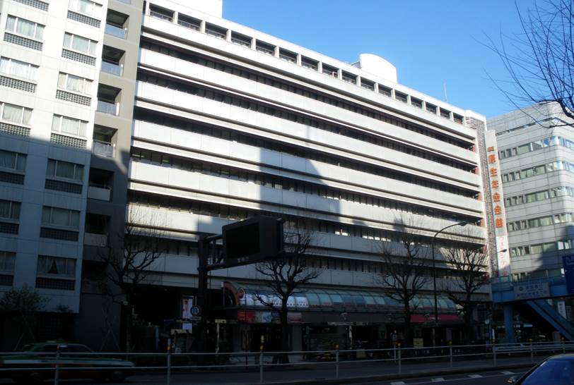
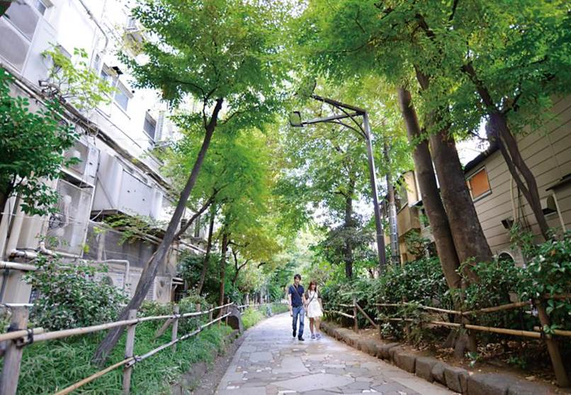
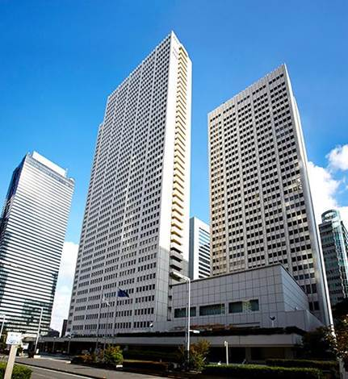
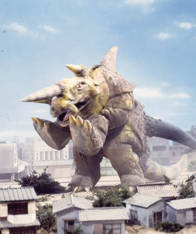
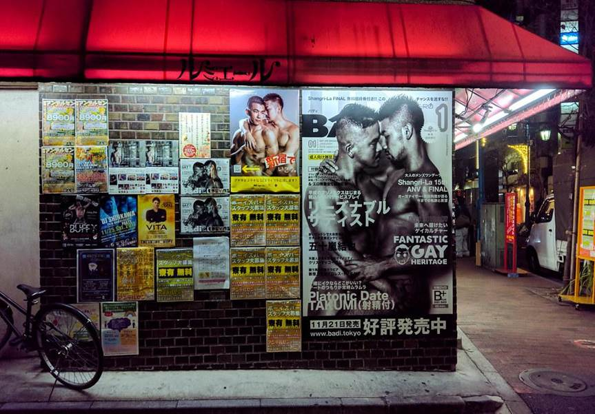
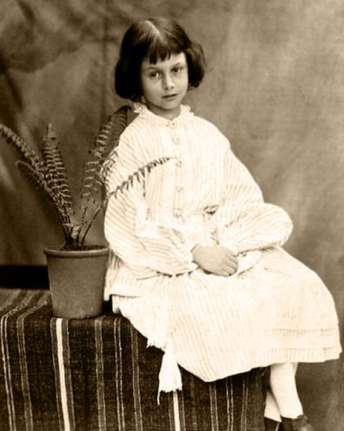
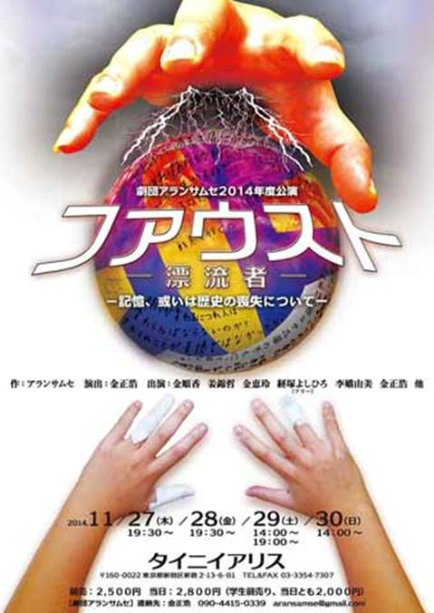

目录
1. 出典：
Ø 靖国大道
Ø “玄海”餐厅
Ø 拳击漫画
Ø 東京厚生年金会館
Ø 今天的演出
Ø 彩虹乐团
Ø Pierrot
Ø 明和电机
Ø 新宿遊歩道公園
Ø 松田优作
Ø 新宿二丁目
Ø 爱丽丝适应拍照
2. 剧情：
Ø 其它
1. 翻译：
新宿的一条街，以霓虹灯而闻名。 这条路左起新宿站，连接着作为东京丰富多彩的夜生活区之一的歌舞伎町，和具有同志村色彩的新宿二丁目。
Figure 1. 靖国大道夜景
日文“水炊き料理屋”，“水炊き”指鸡肉汆锅。
这里的日料店是在新宿高岛屋的“玄海”餐厅，位于灰流和黑爱丽丝相遇的厚生年金会館附近。官网是：http://genkai-group.jp/takashimaya/

Figure 2. 玄海官网上的鸡肉汆锅图片
SUGAR，是新井英树所著的，以拳击为主题的漫画。讲述了主角石川凛结识拳击这一运动项目，并成为职业拳击手的故事。这部漫画在“Young Magazine Upper”（讲谈社）这本杂志中，连载于2001年15号---2004年21号。
另外，因为从第三章开始主角搬到了东京，漫画的舞台移到了新宿富久町。值得一提的是，Liar-soft的开发室在搬家前也在富久町。

Figure 3. 拳击漫画SUGAR
東京厚生年金会館，直译东京退休金养老金大厅，建成于1961年4月15日，是社会保险局为促进雇员养老保险成员的福利，而设立的福利养老金福利设施，是遍布日本各地的员工退休金大厅之一。 它由社会福利署的福利养老金业务促进公司运营。 此外，这栋建筑还拥有一个音乐厅，被用于承办各种音乐会和音乐巡演。
该建筑因年久失修，于2010年3月31日关闭，并遭到拆除，原址于2019年新建了一座大楼。

Figure 4. 東京厚生年金会館原址
2004年5月23日，在東京厚生年金会館举行的演出是“2004年後藤真希音乐会巡回演唱会”。（日本wiki这都统计......）
演唱会资料：http://www.up-front-works.jp/release/detail/PKBP-5023/
_Alice.files/image006.jpg)
Figure 5. 後藤真希巡回演唱会海报
彩虹乐团，为日本著名的视觉系摇滚团体，由hyde、tetsuya、ken、yukihiro所组成。1991年2月以tetsuya作为中心在大阪成立。官方歌迷会为“LE-CIEL”（1994年设立）。在2003年，他们被大型音乐行HMV Japan评为历代百大流行歌手当中的第58名。
Figure 6. 彩虹乐团
1993年组成的日本视觉系乐团，经纪公司为J-ROCK（AKATSUKI部属），唱片公司为Victor Entertainment, Inc.。
Plastic Tree的音乐演奏受到80年代的英式摇滚所影响，充满文学感的歌词以及浮游感的歌声为其特色。 主要作曲为团长长谷川正，词则为主唱有村龙太朗执笔，2002年开始吉他手ナカヤマ アキラ的作品也逐渐增加。
Figure 7. Plastic Tree
PIERROT是日本视觉系乐团。1994年组成，经过团员的变换后，1995年组成现在的团员型态。1998年出道。2006年4月12日解散。2014年重组，并于10月24日、25日，举行演唱会“DICTATORS CIRCUS FINAL”。
Figure 8. Pierrot
明和电机，是日本的新锐设计及表演团体，以自制的乐器表演并且贩售而闻名于日本。其表演经纪人是吉本兴业。 2015年，明和电机获邀请出席香港K11 Design Month 2015，除了产品展览外，明和电机亦有到场参与现场表演。
“明和电机”乍听之下，是家电器公司的名称，但实际上是个另类团体。该团体表演用的乐器，并非一般音乐所用的正规乐器，而是由该团体的“社长”土佐信道（とさ のぶみち）自行开发出来的。他带着自制乐器的原型，到各地表演。但并非纯粹的表演而已，土佐还将这些乐器交由玩具厂量产贩卖，借由表演的机会销售这些乐器。这些乐器利用简单的机械及物理原理所设计出来，其风格为纯真、搞笑与荒谬。
 上述4个乐队，前3个属于视觉系（Visual-kei），最后一个“明和电机”属于筑波系（Tsukuba-kei）。
上述4个乐队，前3个属于视觉系（Visual-kei），最后一个“明和电机”属于筑波系（Tsukuba-kei）。
Figure 9. 明和电机
新宿遊歩道公園“四季の路”，在新宿的第一条有轨电车线的遗址上，铺上了马赛克形状的鹅卵石道路，是一个树木和时令花草繁茂的休闲长廊。

Figure 10. 新宿遊歩道公園“四季の路”
松田优作，1972~1986放映的刑事电视剧《向太阳怒吼》中的刑警角色，因在剧中身手矫健俐落而奠定知名度。
Figure 11. 松田优作
 京王广场大饭店：
京王广场大饭店：
日本东京都新宿区西新宿的2栋超高层饭店，为东京迪士尼度假区好邻居饭店之一。
 一角超兽哉贡：
一角超兽哉贡：
《艾斯奥特曼》（Ultraman Ace）中出现的超兽。

Figure 12. 京王广场大饭店（左）和超兽哉贡（右）
新宿二丁目是位于日本东京都新宿区新宿的一个街区，占地面积约为10公顷，在2015年时有1213人居住。自江户时代开始，新宿二丁目就是著名的宿场町，并因此发展为买春街。自1960年代之后，新宿二丁目开始带有同志村色彩。现在新宿二丁目是世界上最大的同志村之一。但近年由于异性恋顾客的增加和同性恋群体转往其他地点，新宿二丁目正逐渐变为普通欢乐街。

Figure 13. 新宿二丁目GAY广告
《爱丽丝漫游仙境》的作者查尔斯·道奇森（笔名路易斯·卡罗）的爱好是照相，尽管在当时拍照是一项非常困难的技术。他曾给爱丽丝的原型爱丽丝·里德尔（Alice Liddell）拍过好多张照片，其中有很多保留至今。

Figure 14. 爱丽丝·里德尔的照片
卵料理屋「ラケル」，是一家专门做蛋料理的餐厅。像作品中描述的那样，这家餐厅有使用印有《爱丽丝漫游仙境》和《彼得兔》中角色的餐具。
Figure 15. Rakeru餐厅中的蛋料理
拉结，出自《圣经·创世纪》，族长雅各（Jacob）的妻子，是一个无法生育且嫉妒心很重的人，也是扑克牌方片Q的来源。
雅各为逃避追杀，逃到了拉结的家，结果立刻爱上了她，希望同她结婚，舅舅拉班要求雅各为他牧羊7年，但在婚礼的夜晚却哄骗他，将姐姐利亚穿上礼服，冒充拉结嫁给雅各。
犹太人中还传说，雅各和拉结怀疑拉班会施行这样的诡计，设计了一连串的暗号，让新郎到时可以识别出蒙头的新娘。可是当拉结发现拉班带利亚前去时，不忍让自己的姐姐在众人面前蒙羞，将暗号透露给了姐姐。
当雅各在结婚初夜发现妻子是利亚后，婚姻已经生效。于是雅各接受拉班的要求，再牧羊7年，才有机会娶到了拉结。随了利亚及拉结外，拉班也给予利亚及拉结的两个侍女给雅各，两人皆成为雅各的妻子。
当利亚生了四个儿子后，拉结仍难以怀孕。她让其侍女辟拉给雅各，辟拉再生了两个儿子，被视为拉结的儿子。利亚再生了两个儿子及一个女儿，亦使其侍女悉帕生了两个儿子。最终，不耐烦的拉结服用曼陀罗草（Madragora），自己其后也生了两个儿子。
² Vietnam Alice & Artichoke tea
Vietnam Alice是位于新宿Lumine 17楼的越南餐厅，目前已永久停业。
两人在餐厅里喝的茶叫做朝鲜蓟茶，属于欧洲的菊花属的多年生植物，越南茶的一种，含菜蓟素、菜蓟苦素、大海米菊素、木犀草甙等成分，故有利肝保肝、降低胆固醇、排除人体多余水分等功用，对咳、喘、痰等症均有疗效，对人体癌细胞也有一定消除作用，而且似乎具有美容功效。
Figure 16. 朝鲜蓟茶商品
东京柏悦酒店，豪华五星级酒店，新宿地标性建筑之一。柏悦酒店是位于繁华东京中心区的一处宁静的绿洲，它不仅为客人提供最豪华和舒适的客房，其优越的座落位置也提供给客人欣赏壮观的东京风光、关东平原（Kanto Plain）、美丽的富士山风光的一处最佳位置。柏悦酒店的客房占据了52层高的新宿花园中心大厦的14层，客房和套房宽敞，适合来自世界各个的客人选用。
东京希尔顿酒店，位于西新宿6丁目6番2号，属于希尔顿国际酒店集团，是豪华五星级酒店。
Figure 18. 东京柏悦酒店夜景
² タヴン・タヴロウ
タヴン・タヴロウ，这是一个现实存在过的剧院公司，于2006年停止活动。2004年5月20-24日在新宿的Tiny Alice进行过名为“そして僕には、好きな人ができた”（我有一个喜欢的人）的公演。
² タイニイ・アリス
新宿二丁目地下小剧场的名字，官网：http://www.tinyalice.net/
Tiny有“小”和“幼儿”的意思，可以委婉地引申为“没有魅力”。

Figure 19. Tiny Alice剧场官网上的公演海报
2. 剧情：
² 剧情简介：灰流和爱丽丝在新宿的一次约会。
 这一章跟主线无关，纯粹是各式出典的秀。
这一章跟主线无关，纯粹是各式出典的秀。
 灰流在最开始离开家，无法谋生的时候，就在新宿二丁目的同性恋酒吧（gay
bar）工作。
灰流在最开始离开家，无法谋生的时候，就在新宿二丁目的同性恋酒吧（gay
bar）工作。